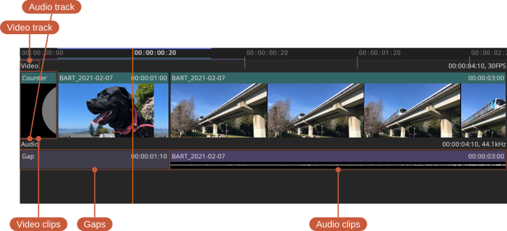

Timeline
By default, the timeline is minimized and shows only the first video and audio track. To see every track, toggle the minimized state from the Timeline menu.

The current frame is the red vertical line. The in/out range is represented by the blue line at the top of the timeline. The cache is represented by the green and purple lines.
Default timeline controls:
- Change current frame — Left mouse button
- Zoom — Mouse wheel, or the - and = keys
- Frame view — Backspace
- Pan — Middle mouse button
The video thumbnails and audio waveforms can be toggled and sized independently from the Timeline menu. Turning them off saves vertical space and improves performance; with both off, the timeline is a compact strip with just the current frame, in/out range, and cache.